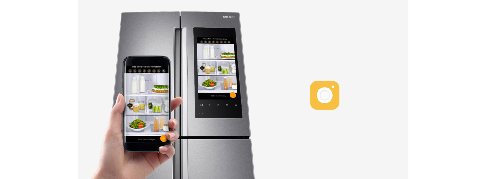

Cookit
Visual Recognition Cooking App
Visual Recognition Cooking App
CLIENT / YEAR Personal / 2017 DURATION 5 Weeks SKILLS UI/UX, Prototype, Visual Design, Branding, IA TOOLS Photoshop, Illustrator, Sketch, After Effects, Origami Studio
DESCRIPTION The idea simply started from 'What if there is a camera that scans a photo of food and provides recipes using visual recognition technology?'. Cookit will help the users to build their own collection of the recipes. CHALLENGE The biggest challenge while I'm working on this project was how to differentiate from millions of other cooking apps. I differentiated the Cookit to be the food version of Shazam.
The only CTA available for the user is ‘Save For Later’ on the scanned page, because the user have the food in front of them already and they are about to enjoy the food. The main purpose of this app is to save, revisit and cook.
We take pictures of food and remember if it was delicious or not. A lot of cooking apps tell us to try their recipes that we don't know anything about it, but instead, Cookit let people cook what they remember and want to cook.

We take pictures of food and remember if it was delicious or not. A lot of cooking apps tell us to try their recipes that we don't know anything about it, but instead, Cookit let people cook what they remember and want to cook.

+Watson Visual Recognition Technology Visual Recognition understands the contents of images. Analyze images for scenes, objects, faces, colors, food, text, explicit content and other subjects that can give you insights into your visual content.
Cookit users can host a dinner night and invite guests.
What if restaurants share their recipes on Cookit?
What if Cookit can sync with smart fridge?
Cookit can be paired up with a smart fridge and knows what ingredients the user have. Using Visual Recognition Technology, it will automatically list the ingredients and recommend recipes based on what user have.
Competitive Analysis
Analyzed three competitors, Kitchen Stories, Yummly, and Food Network,
after conceptualizing Cookit to make UX better.
Kitchen Stories: Minimal design make the food stand out more.
Best looking visual out of three competitors. It has less options and functions.
It's easy to use. Simple How-to videos are clever that it's great for beginners.
Yummly: It’s the only app that has allergy and preferences options.
Users can shop ingredients directly from the app. Most personalized product.
Clutter and heavy drop shadow designs make the food look less tasty.
FoodNetwork: Variety of chefs' recipes are available.
It's most general product designed for all different target users.
Vast amount of recipes. Unorganized (No steps, bullet points, etc)
text direction make it harder to follow.
{kind=link}
{kind=link}
{kind=link}
{kind=link}
{kind=link}
{kind=link}
{kind=link}
{kind=link}
{kind=link}